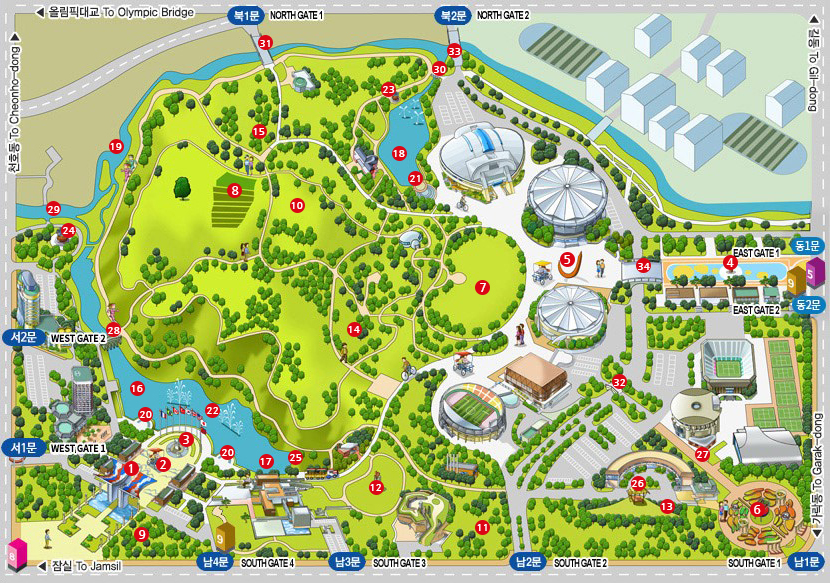
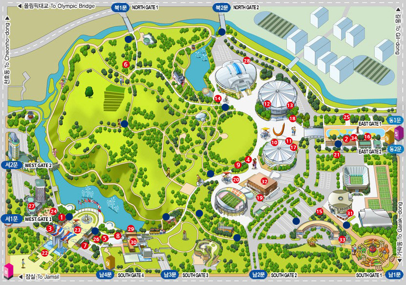
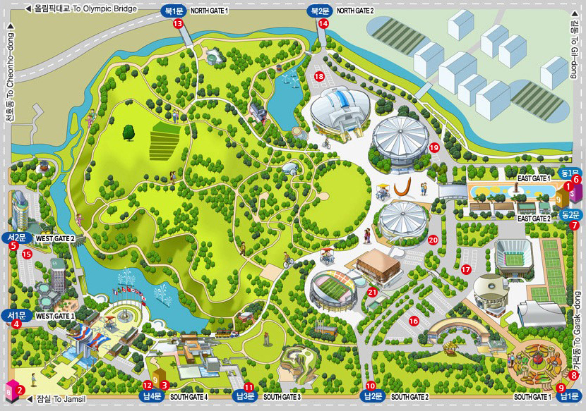

HOME>공원소개>공원이용안내
공원 안내도

- 건물 및 기관
- 1.올림픽홀
- 2.올림픽수영경기장
- 3.KSPO DOME
- 4.K-아트홀
- 5.올림픽테니스경기장
- 6.SK핸드볼경기장
- 7.우리금융아트홀
- 8.벨로드롬
- 9.실내테니스장
- 10.스포츠비즈홀
- 11.올림픽문화센터
- 12.서울올림픽기념관
- 13.서울올림픽파크텔
- 14.소마미술관
- 15.평생교육원
- 16.몽촌역사관
- 17.백제집자리전시관
- 18.한성백제박물관
- 19.국민체력센터
- 20.체력인증센터
- 21.지샘터도서관
- 22.국민체육진흥공단
- 23.대한체육회
- 24.한국체육산업개발(주)
- 25.서울역사편찬원
- 26.서울평화상문화재단
- 27.대한장애인체육회
- 
- 지형 및 장소
- 1.세계평화의문
- 2.평화의광장
- 3.국기광장
- 4.만남의광장
- 5.한얼광장
- 6.장미광장
- 7.88마당
- 8.내성농장
- 9.선린동산
- 10.가족놀이동산
- 11.조각공원
- 12.지구촌공원
- 13.들꽃마루
- 14.야생화학습장
- 15.피크닉장
- 16.몽촌해자
- 17.몽촌폭포
- 18.88호수
- 19.성내천
- 20.수변무대
- 21.88호수수변무대
- 22.음악분수
- 23.팔각정(오륜정)
- 24.팔각정(몽촌정)
- 25.물레방아
- 26.원두막
- 27.상징가로
- 28.곰말다리
- 29.구중교
- 30.까치다리
- 31.무지개다리
- 32.백호다리
- 33.청룡교
- 34.한얼교
- 
- 편의시설
- 1.안내센터Ι
- 2.안내센터ΙΙ
- 3.자전거 매표소Ι
- 4.자전거 매표소ΙΙ
- 5.호돌이열차 매표소Ι
- 6.호돌이열차 매표소ΙΙ
- 7.미니스톱
- 8.6호매점
- 9.3호매점(한얼)
- 10.5호매점(핸드볼경기장)
- 11.1호매점(본점)
- 12.8호매점
- 13.7호매점
- 14.2호매점(호수)
- 15.4호매점(장미)
- 16.CU편의점
- 17.휴대폰충전소
- 18.해피박스(티켓박스)
- 19.해피박스(티켓박스)
- 20.농구장
- 21.농구장
- 22.인라인
- 23.인라인
- 24.지압로
- 25.지압로
- 26.어린이놀이터
- 27.기념관 카페테리아
- 28.수영장 편의시설
- 29.파스쿠찌
- 30.뮤지엄숍
- 31.올림픽홀 카페
- 32.우리금융아트홀 카페
- 33.K-아트홀 카페
- 34.음식점
- 
- 출입구 및 주차장
- 1.올림픽공원역(5호선,9호선)
- 2.몽촌토성역(8호선)
- 3.한성백제역(9호선)
- 4.출입구 서1문(올림픽회관)
- 5.출입구 서2문(올림픽파크텔)
- 6.출입구 동1문
- 7.출입구 동2문
- 8.출입구 동3문
- 9.출입구 남1문
- 10.출입구 남2문
- 11.출입구 남3문
- 12.출입구 남4문
- 13.출입구 북1문
- 14.출입구 북2문
- 15.주차장 회관
- 16.주차장 P1
- 17.주차장 P2
- 18.주차장 P3
- 19.주차장 P4
- 20.주차장 P5
- 21.주차장 P6